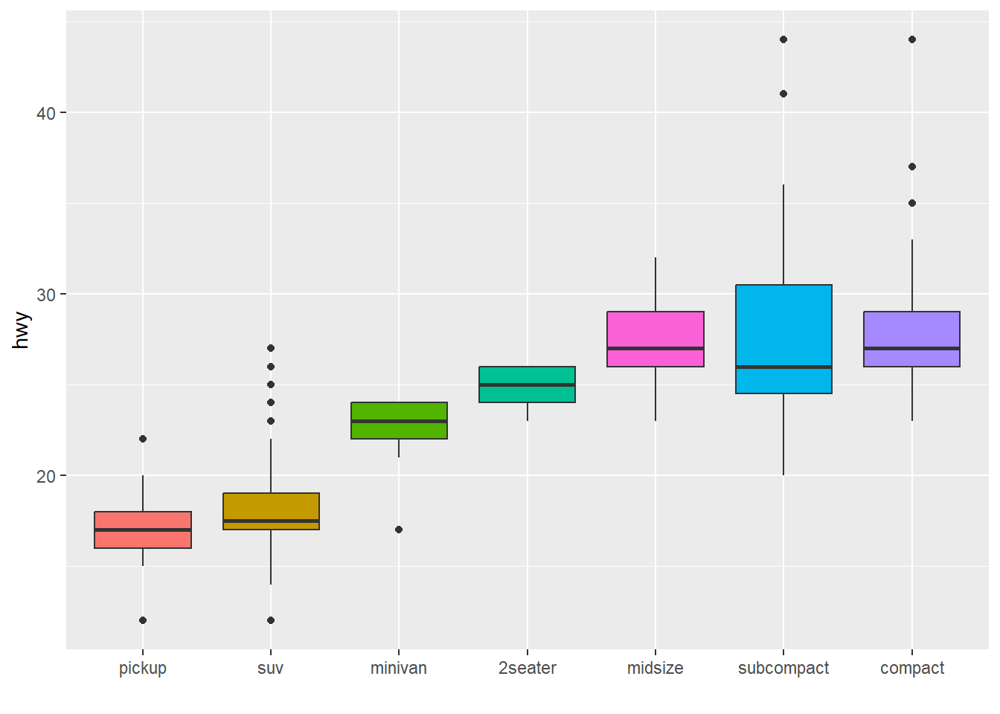
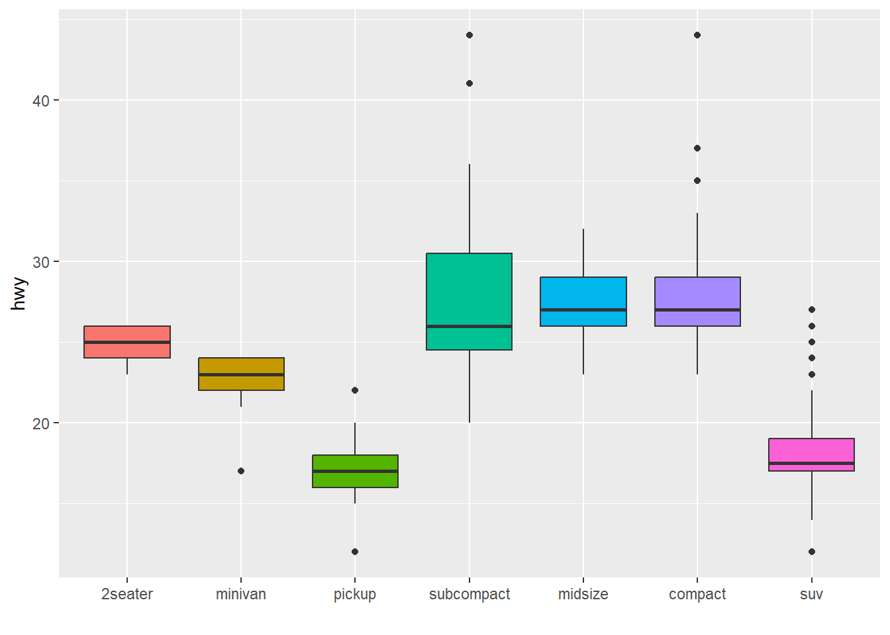

Chapter 8 Rmarkdownsyntax
Generate a graph with ggplot (any graph you like, here are some examples) and try some options to make it colourblind-friendly. Test your figure here (Export your graph to jpeg using the export option in Rstudio (bottom right, above the graph) or ggsave() and upload the file to this website.)
## ── Attaching core tidyverse packages ──────────────────────── tidyverse 2.0.0 ──
## ✔ dplyr 1.1.4 ✔ readr 2.1.5
## ✔ forcats 1.0.0 ✔ stringr 1.5.1
## ✔ ggplot2 3.5.1 ✔ tibble 3.2.1
## ✔ lubridate 1.9.3 ✔ tidyr 1.3.1
## ✔ purrr 1.0.2
## ── Conflicts ────────────────────────────────────────── tidyverse_conflicts() ──
## ✖ dplyr::filter() masks stats::filter()
## ✖ dplyr::lag() masks stats::lag()
## ℹ Use the conflicted package (<http://conflicted.r-lib.org/>) to force all conflicts to become errorslibrary(ggplot2)
# Using median
mpg %>%
mutate(class = fct_reorder(class, hwy, .fun='median')) %>%
ggplot( aes(x=reorder(class, hwy), y=hwy, fill=class)) +
geom_boxplot() +
xlab("class") +
theme(legend.position="none") +
xlab("")
# Using number of observation per group
mpg %>%
mutate(class = fct_reorder(class, hwy, .fun='length' )) %>%
ggplot( aes(x=class, y=hwy, fill=class)) +
geom_boxplot() +
xlab("class") +
theme(legend.position="none") +
xlab("") +
xlab("")